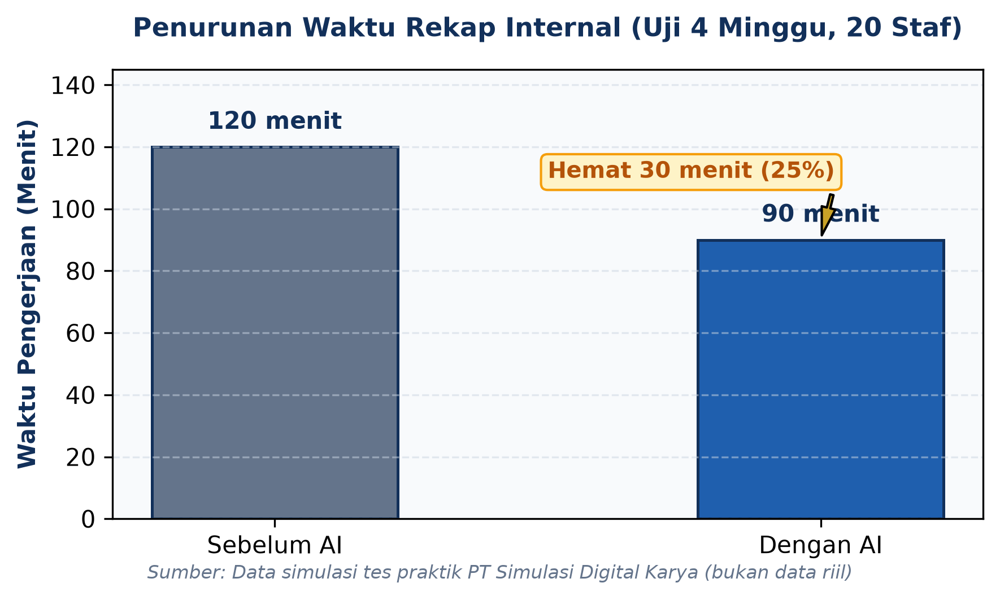

PT Simulasi Digital Karya menguji penggunaan AI dalam pekerjaan rekap internal. Uji yang melibatkan 20 staf selama empat minggu itu mencatat penurunan waktu rekap dari 120 menit menjadi 90 menit. Angka tersebut menunjukkan penghematan 30 menit, atau 25 persen, pada pekerjaan yang diuji. Hasil ini masih terbatas pada uji internal.
Perubahan waktu pengerjaan memberi gambaran awal tentang kemungkinan manfaat AI untuk aktivitas administrasi. Meski demikian, waktu yang lebih singkat belum cukup untuk menjelaskan keseluruhan kualitas hasil. Ketepatan isi rekap, kebutuhan koreksi, dan konsistensi hasil perlu diperiksa sebelum penggunaan diperluas. Bahan yang tersedia belum memberikan ukuran mengenai aspek-aspek tersebut.
Rani, koordinator proyek simulasi, menyampaikan bahwa pemeriksaan hasil masih dilakukan. “Kami masih memeriksa kualitas hasil sebelum memperluas penggunaan.” Pernyataan ini menempatkan hasil uji sebagai bahan evaluasi, sementara keputusan perluasan penggunaan tetap memerlukan peninjauan.

Temuan tersebut belum diaudit secara independen. Belum tersedia pula bukti mengenai dampak penggunaan AI terhadap laba perusahaan. Karena itu, penurunan waktu rekap tidak dapat langsung disebut sebagai kenaikan laba, penghematan biaya perusahaan secara keseluruhan, atau keberhasilan pada seluruh proses kerja. Kesimpulan perlu mengikuti lingkup data yang benar-benar tersedia.
Sebagai langkah evaluasi, hasil uji dapat ditelaah bersama catatan pemeriksaan kualitas dan kebutuhan koreksi. Perbandingan waktu sebaiknya mempertimbangkan kesetaraan jenis pekerjaan serta beban rekap. Ini merupakan saran tindak lanjut, bukan kegiatan tambahan yang telah dilaporkan berlangsung di perusahaan.
Untuk sementara, informasi yang dapat ditegaskan adalah keterlibatan 20 staf, durasi uji empat minggu, dan perubahan waktu rekap dari 120 menjadi 90 menit. Gambaran manfaat yang lebih luas masih membutuhkan data pendukung. Draf artikel ini merupakan simulasi dan memerlukan persetujuan editor sebelum digunakan.